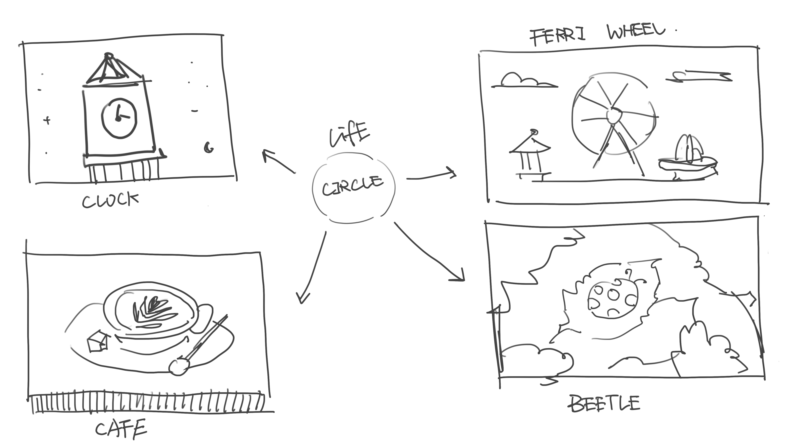

Control is an interactive game about how human intervention can shift a system from balance to instability. Using a custom rotary controller, the player moves through a series of calm scenes and gradually pushes them into disruption. What begins as control slowly turns into excess, imbalance, and loss of control.
This project explores how human intervention can gradually change a system from balance to instability through a series of interactive scenes. Using a custom rotary controller, the player moves through several everyday and symbolic environments that all begin in a calm, stable state. As the player continues to turn the knob, each scene is slowly pushed into a different kind of disruption.
The main interaction in the project is rotation. I chose a rotary controller because it suggests adjustment, precision, and control, but in this game that same action also becomes a way of disturbing the system. The more the player turns, the more the scene changes. What starts as a simple act of control gradually leads to excess, pressure, and loss of balance.
The project looks at gradual transformation. It is about how small, repeated actions can accumulate and reshape the world around us. Through these interactive scenes, the game reflects on the tension between control and instability, and asks how human actions can affect systems that at first seem stable and self-contained.